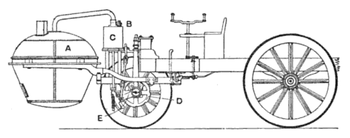

предыдущий век был богат на невероятные достижения науки и техники. произошло множетво вещей
без которых наше сегодняшнее будущее было бы невозможным
появление автомобилей
В 1806 году появились первые машины, приводимые в
движение двигателями внутреннего сгорания (на англ. fuel gas), что
привело к появлению в 1885 году повсеместно используемого сегодня
бензинового двигателя внутреннего сгорания. Машины,
работающие на электричестве на короткий срок появились в начале XX века, но
почти полностью исчезли из поля зрения вплоть до начала XXI века, когда снова в
озникла заинтересованность в малотоксичном и экологически чистом транспорте.
Поздние этапы развития машиностроения определялись
тенденциями в размере и стилистике внешнего вида, а также предпочтениями в целевом использовании.

Карл Бенц (Carl Friedrich Michael Benz) по прaву
считается изобретателем автомобиля. Он получил первые в
мире патенты на все основные узлы автомобиля.
В 1926 году компания Бенца объединилась с компанией Daimler, также занимавшейся выпуском автомобилей.
Все модели были переименованы: они стали называться
"Mercedes-Benz ".
В 1936 году началось
производство легковых автомобилей с
дизельным мотором. Первой моделью с таким двигателем стал Mercedes-Benz 260 D.
позже дизельные двигатели были модернизированы и установлены в во множество других моделей транспорта.
этому мы обязаны инженерам Mercedes-Benz
История Интернета
началась с разработки компьютеров в 1950-х годах и появления
научных и прикладных концепций глобальных вычислительных сетей почти
одновременно в разных странах, в первую очередь в научных и военных лабораториях
в США, Великобритании и Франции.
по заказу американского военного агентства DARPA.
Используя наработки ARPANET, в 1989 году Национальный научный
фонд США создал сеть NSFNET для связи между университетами и
вычислительными центрами. В отличие от закрытой ARPANET подключение к
NSFNET было достаточно свободным, и к 1992 году к ней подключились более 7500 мелких сетей, включая 2500
за пределами США. С передачей опорной сети NSFNET в коммерческое использование появился современный Интернет.
До 1980-х годов компьютерные сети были доступны в основном сотрудникам
специализированных учреждений, а в 1980-х годах начинается распространение персональных компьютеров
(ПК) в частном пользовании, что породило массовый спрос на сети (которому предшествовала ручная передача носителей). Если специалисты в основном использовали сети для научно-производственных задач, то частные лица прежде всего проявили интерес к личному общению и получению популярных текстов и прочих файлов для своих ПК. Первой массовой сетевой технологией, решавшей эти задачи, стала электронная почта,
на её базе в 1980 году была создана первая массовая глобальная сеть обмена компьютерной информацией — Usenet.
Концепция обмена данными — передачи данных между
двумя разными местами через электромагнитную среду, например, радио или
электрический провод — предшествовала появлению первых компьютеров. Такие системы
связи, как правило, ограничивались двухточечной связью между двумя конечными устройствами.
Предвестниками такого вида связи можно считать телеграфную связь и телексы (телетайпы).
В конце XIX века телеграф стал первой полностью цифровой системой связи.
Первые компьютеры имели центральный процессор и дистанционные терминалы. По мере развития технологий
были разработаны новые системы, позволяющие осуществлять связь на
более значительные расстояния (для терминалов) или с более высокой скоростью
(для соединения локальных устройств), что было необходимо для создания мейнфреймов.
Эти технологии позволили передавать данные, такие как файлы, между удалёнными компьютерами.
Однако двухточечная модель связи была ограниченной, поскольку не позволяла осуществлять прямую
связь между любыми двумя произвольными системами; было необходимо физическое соединение.
Эта технология также считалась опасной при стратегическом и военном использовании по причине
отсутствия альтернативных путей передачи данных в случае нападения противника.